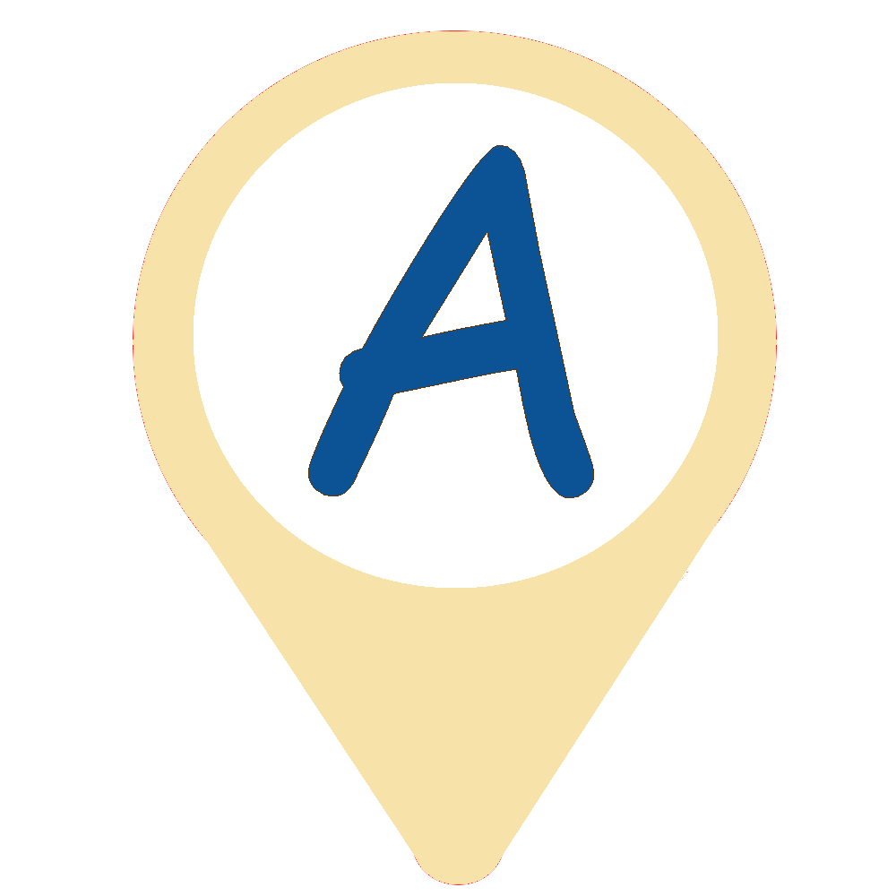

Spécifique
Mesurable
Atteignable
Réaliste
Temporellement
défini
Détails
En fixant un smart objectif, il faut que celui-ci soit spécifique, c’est-à-dire clairement défini.
Plus vous êtes précis, mieux vous pourrez déployer les efforts nécessaires pour y arriver.
Il faut avouer qu’il est difficile de commencer et de terminer lorsque les objectifs sont vagues.
Par exemple, « augmenter le trafic de notre site » n’est pas du tout concret. Les moyens utilisés peuvent être insuffisants ou excessifs sans des objectifs clairs.
Plus vous êtes précis, mieux vous pourrez déployer les efforts nécessaires pour y arriver.
Il faut avouer qu’il est difficile de commencer et de terminer lorsque les objectifs sont vagues.
Par exemple, « augmenter le trafic de notre site » n’est pas du tout concret. Les moyens utilisés peuvent être insuffisants ou excessifs sans des objectifs clairs.
Détails
Le deuxième critère suggère des objectifs mesurables, qu’on peut quantifier, chiffrer !
Sans cela, vous ne pourrez pas savoir si vous avez atteint vos objectifs, si les résultats sont insuffisants ou vont au-delà de vos espérances.
Sans cela, vous ne pourrez pas savoir si vous avez atteint vos objectifs, si les résultats sont insuffisants ou vont au-delà de vos espérances.
Détails
Rien ne sert de vouloir atteindre la lune si l’on n'a pas les moyens de s’y rendre.
Vos moyens sont-ils à la hauteur de vos ambitions ?
Si vous manquez de ressources pour la réalisation du projet, il vaut mieux ne plus fixer d’objectifs et tout arrêter.
Vos moyens sont-ils à la hauteur de vos ambitions ?
Si vous manquez de ressources pour la réalisation du projet, il vaut mieux ne plus fixer d’objectifs et tout arrêter.
Détails
Ce critère est souvent confondu avec le A de atteignable, parce que « réaliste » et « atteignable » signifient à peu près la même chose.
Il s’agit ici d’évaluer la pertinence de vos objectifs.
Vous avez peut-être les moyens et le temps, mais est-ce rentable ?
Est-ce que cela ne risque pas d’épuiser vos ressources ?
En étudiant ce critère, le but est savoir si vos objectifs sont réalistes, réalisables et pertinents par rapport à votre situation.
Il s’agit ici d’évaluer la pertinence de vos objectifs.
Vous avez peut-être les moyens et le temps, mais est-ce rentable ?
Est-ce que cela ne risque pas d’épuiser vos ressources ?
En étudiant ce critère, le but est savoir si vos objectifs sont réalistes, réalisables et pertinents par rapport à votre situation.
Détails
Fixer une deadline à un projet est essentiel pour l’utilité de celui-ci !
La plupart des objectifs se doivent d’être atteints dans un certain laps de temps pour qualifier le projet de réussi.
Dans le cas d’un site web, obtenir 10 000 visiteurs uniques en un mois est intéressant, mais en une année, les ressources utilisées auront été trop importantes pour être comblées par ce maigre gain.
En désignant une date limite, vous générez un engagement fort permettant d’atteindre plus facilement vos objectifs. Vous maximiserez le travail et développerez un effort soutenu pour réaliser efficacement vos tâches.
La fin d’un projet doit être clairement définie pour éviter de dépenser plus de ressources que prévu et de perdre du temps. L’atteinte des objectifs doit être rentable et offrir des avantages et des gains à votre entreprise.
Plus on finit tôt un projet, plus les avantages et les gains sont importants ! Il faut cependant prendre le temps qu’il faut et éviter de bâcler le travail !
La plupart des objectifs se doivent d’être atteints dans un certain laps de temps pour qualifier le projet de réussi.
Dans le cas d’un site web, obtenir 10 000 visiteurs uniques en un mois est intéressant, mais en une année, les ressources utilisées auront été trop importantes pour être comblées par ce maigre gain.
En désignant une date limite, vous générez un engagement fort permettant d’atteindre plus facilement vos objectifs. Vous maximiserez le travail et développerez un effort soutenu pour réaliser efficacement vos tâches.
La fin d’un projet doit être clairement définie pour éviter de dépenser plus de ressources que prévu et de perdre du temps. L’atteinte des objectifs doit être rentable et offrir des avantages et des gains à votre entreprise.
Plus on finit tôt un projet, plus les avantages et les gains sont importants ! Il faut cependant prendre le temps qu’il faut et éviter de bâcler le travail !